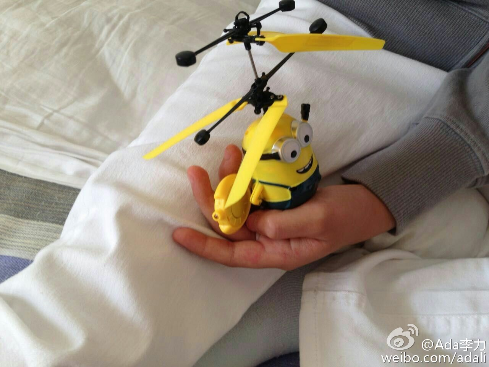
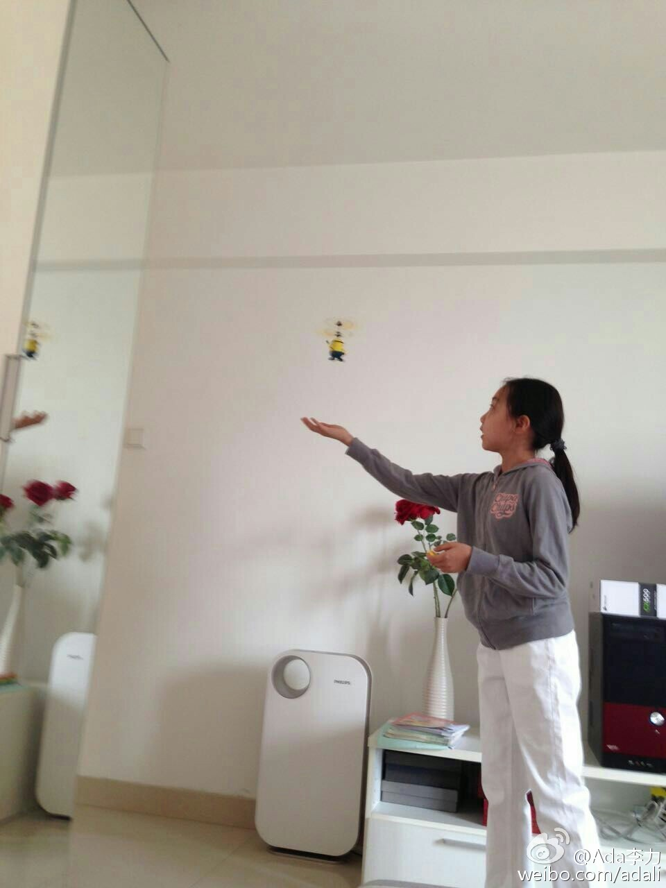

去年回父母那里，说起小时候父母的体罚。父亲反省说他那时打我们，有时只是因为我们让他感觉到没面子。我接上话说:"是的，那个时候我就很痛恨这点，以及所有的家庭暴力"。老爸能反思还是很不错的。太多父母还是混帐逻辑:"打你是为你好。不打你能有今天吗?…" //@武志红:都说说吧。---:抱歉，作者已设置仅展示半年内微博，此微博已不可见。
姣姣在家呆了三天恶补英语，今天学校运动会，明俊和我都建议她去，她倒诸多顾虑，最担心的是怕同学们会据此认为她：“上课时不来，要玩的时候倒来了”。我奇怪姣姣为什么一直这么在意别人怎么说法和别人看法。 运动会有收获，姣姣跳绳拿了第一名，奖品是个小黄人直升机，她很开心。 
被困住的感觉就是：你不喜欢，但还是不得不做的事情。－－ 感想来自最近五个月做全职家庭主妇。家庭主妇也是一种职业，而且是需要多面手才能做好的职业。但我就是不喜欢，即使我具备做好家庭主妇这一职业的所有技能。